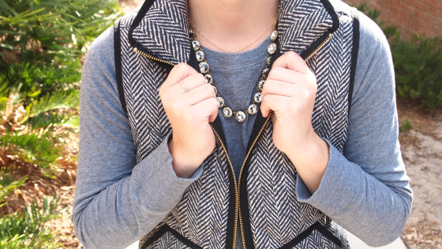
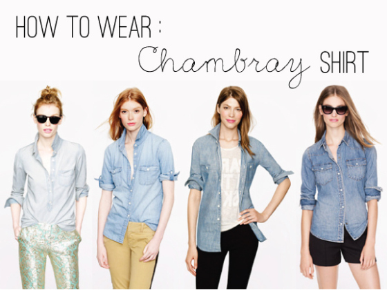
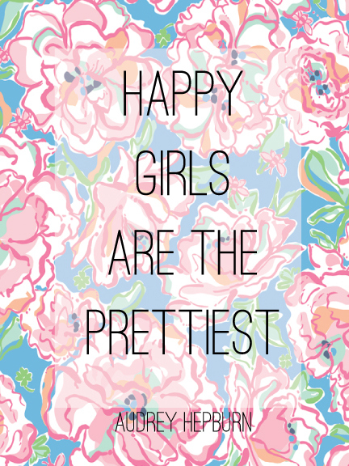
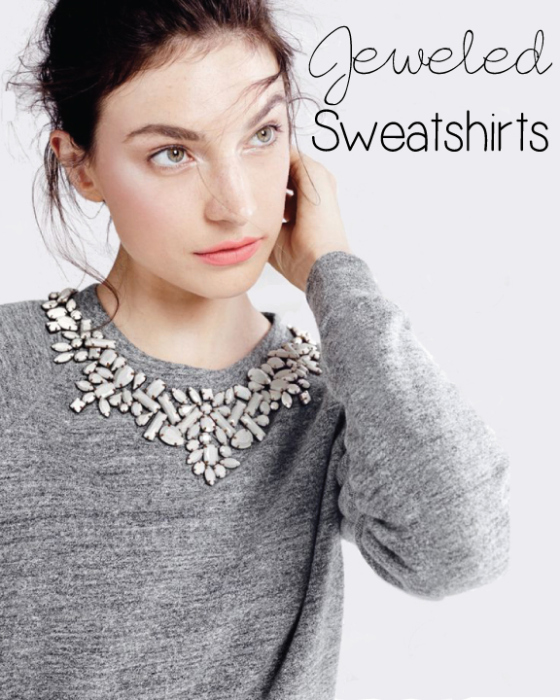

I started my fashion blog in the fall of 2012. It began as a class assignment and eventually grew into a hobby I enjoyed doing.
Fashion has always been an interest of mine and I wanted to share not only my outfits, but the looks of others. Along with that, I offer my opinion and tips on college, beauty, baking, and more.
Here's some of my favorite pieces I have published in the past.

I loved doing this outfit post. I had been seeing this J Crew herringbone vest on several blogs I follow and thought it would be cool to show my readers how I would style it. I received a lot of attention and got to communicate with my readers on their looks!

I recently tried out Adobe CS6's 30-day trial and gave the new Illustrator a whirl. I am in love. I made this picture in Illustratory (borrowed the image) and had fun creating a more visual piece.

I went on to create more pieces with Illustrator by taking my favorite quotes and patterns I gathered around online and put them together. It was fun creating pieces I could then share on Instagram to more followers.

This post was great because it spurred reader inspiration. A follower of mine saw this post and wanted to give it a DIY try. She created a piece of her own by putting studs in on an old sweater. I love this kind of interaction with readers and that's one reason that keeps me blogging.